Making of a Great Helm Replica
Solid Works model of the great helm
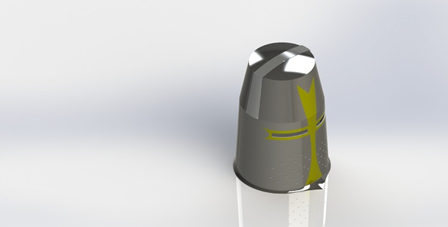The helmet shown above was chosen to be created for the fulfillment of the project requirements. It is an open-source Solid Works model in the style of a typical great helm of the period
Engineering drawing of the great helm
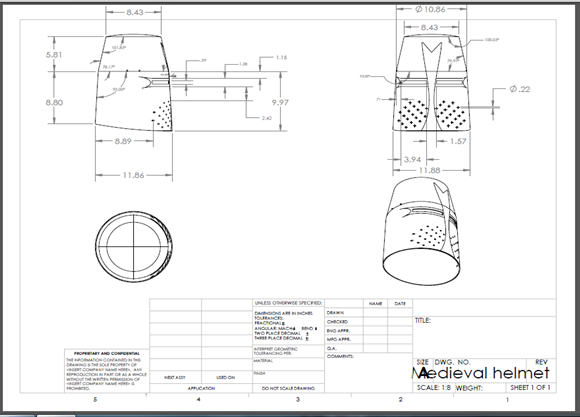The piece was constructed in three separate parts that were then connected to form the helmet: a cylindrical part that forms the bottom of the helmet that extends to just above the eye slits, another cylindrical part that forms the upper space (where the forehead would be), and a flat circular piece for the top. For construction, three 4 x 4 ft. sheets of 18 gauge steel were used. First, the bottom cylindrical piece was constructed. A ruler and chalk were used to mark the metal.
Using a plasma cutter and dremel to cut and sand the sheet steel.
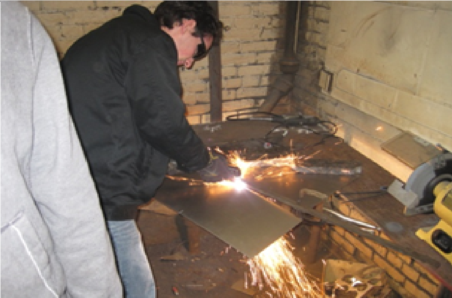 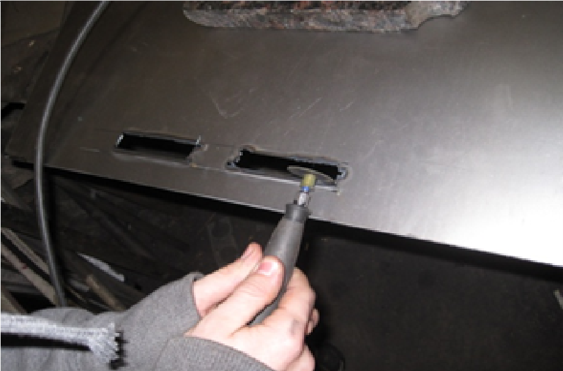 To cut the steel sheet to the right height, a plasma cutter was used.The metal sheet was placed on a table with the end to be cut hanging off. Weights were used to keep the sheet in place, and a metal guide bar was clamped down so that straight lines could be achieved with the tool. After the part was cut out, the eye slits were made. Chalk was used to mark the outlines of the eye slits, and the plasma cutter was again used. Because the cuts made by the plasma cutter were rough, multiple tools then had to be used to round and shape the edges of the eye slits.
Tracing of grid pattern for breathing holes
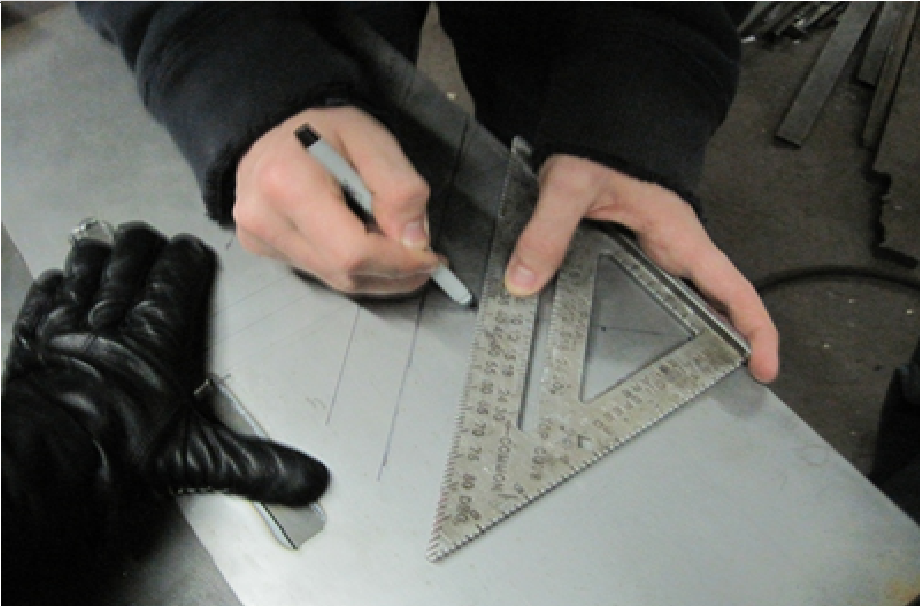The next step was to create breathing holes for this bottom piece. A straight edge was used to create a 45 degree angle under both of the eye slits. The placement of the holes was determined by creating sets of parallel lines that were perpendicular to this, yielding a matching geometric pattern of breathing holes.
Punching and Drilling of Breathing Holes
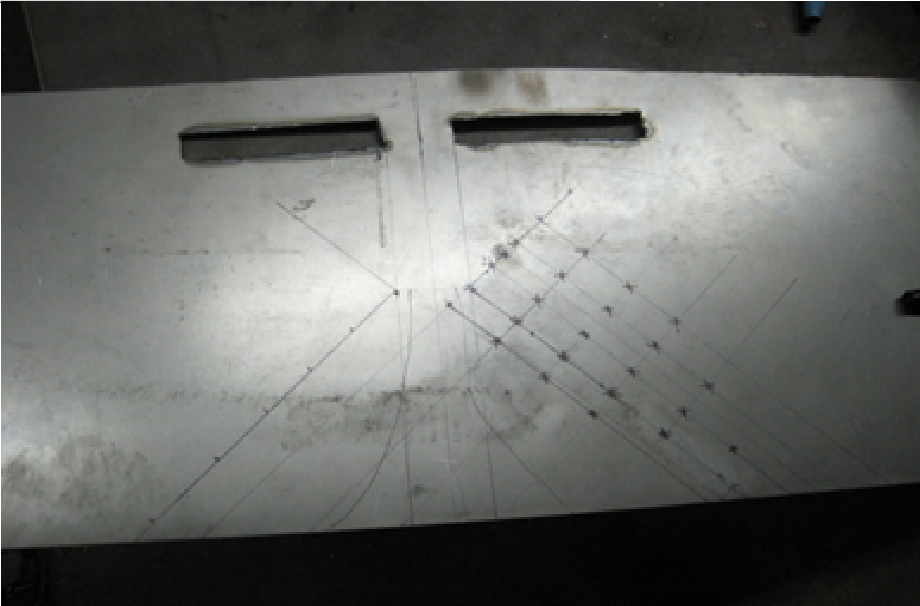 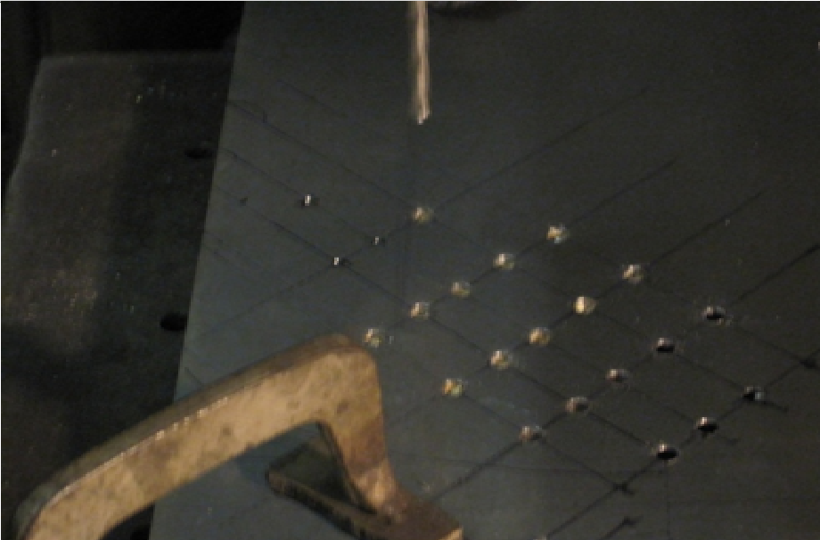 After all of the points were marked for the breathing holes, a hammer and handheld metal tip was used to score the metal. Scoring is a technique where physical indentations are made in metal so that holes can be made accurately. In this case, scoring was used so that a drill bit would easily catch the indentation to make a hole exactly where the points were marked. A period blacksmith, lacking a powered drill, would instead repeatedly score the metal on both sides until penetration was achieved.
Geometry and equations used to construct middle piece of the great helm.
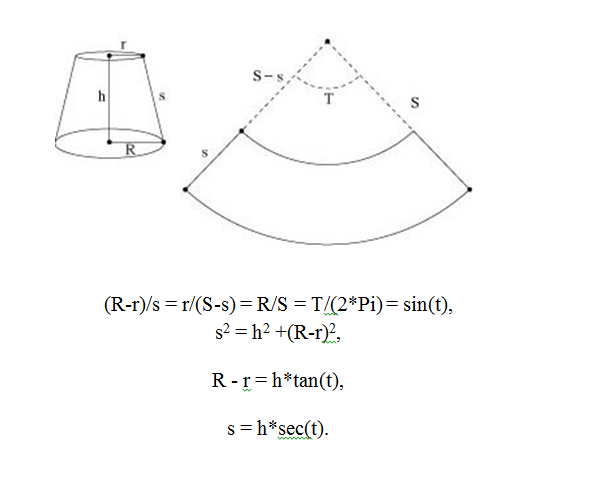Next, the top circular piece was constructed. This was the simplest piece to create. A compass and chalk were used to draw a circle of the correct diameter onto a piece of the sheet steel. The plasma cutter was used again to make a rough cut. Then, the piece was clamped down and a metal grinder was used to smooth and round the edges. The final piece to be created was the upper cylindrical part of the great helm. It can be seen by looking at the drawing that the of this part are tapered, not straight like the bottom piece. In other words, this part is a frustrum of a cone, whereas the bottom part is a simple cylinder. Because of this, the following diagrams and equations were used to draw a correctly sized piece.
The cut-out frustum, before being bent into shape.
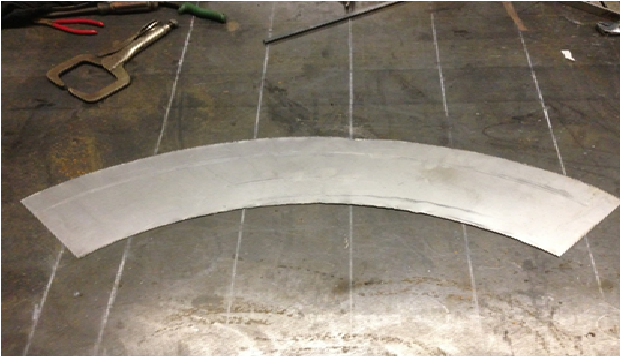Once the piece was drawn on paper, it was cut out to serve as a template. This template was then used to trace the piece onto the sheet steel. The plasma cutter was used to cut the piece out. Like the top piece, this part had to be clamped down and grinded to smooth around the edges.
Using the oxycetalyn blowtorch to melt the end of the copper wire (left). The melted rivets (right)
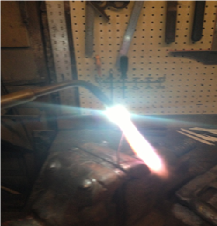 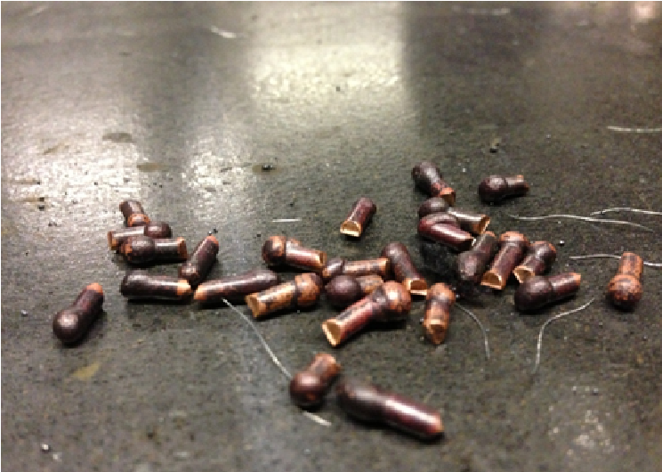 It was decided that copper rivets were to be used to attach the three pieces of the helmet together. These copper rivets were created from copper wire with a diameter of 3/32 of an inch. To make the rivets, first a piece of copper wire was held in place with a vice clamp. Then, an oxycetalyn blowtorch was used on the end of the wire to quickly melt a small portion of the copper. As the copper melted, gravity would cause the liquid metal to flow down and then adhere to the colder copper below. This would form a small rounded head on the copper wire. Once these rivet heads were formed they would be cut off with a wire cutter at a distance approximately equal to one and a half the length of the diameter. This process was repeated until enough rivets were made for the project.
Drilling the rivet holes and threading them through.
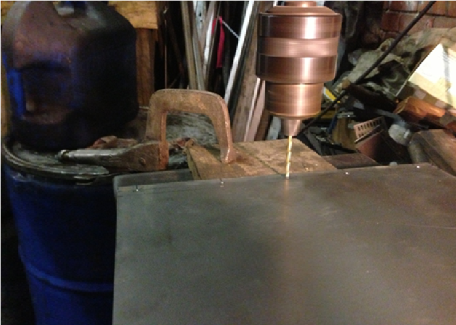 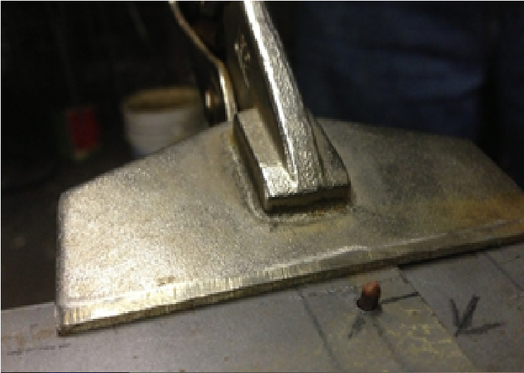 After all the needed pieces were created, the helmet was made by using the copper rivets to attach the individual parts. First, the two bottom pieces were connected. A drill press was used to create a row of holes on the edges of each piece. Then, the holes on each piece were aligned and the rivets were placed head down through the holes.
Hammering a rivet to fasten the metal pieces together.
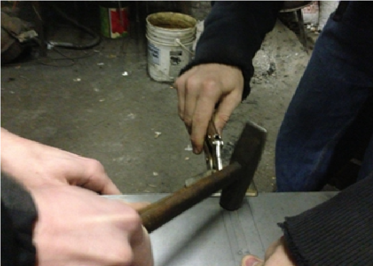The rivets were then pounded with a hammer, flattening to secure them in place and connect the two pieces.
Bending the bottom piece around a round surface to form a cylinder, then riveting it.
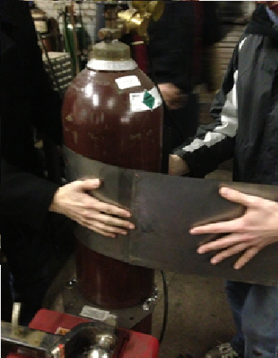 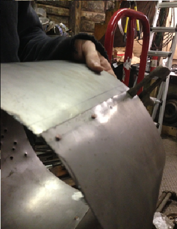 The next step was to make the bottom piece a cylinder. To do this, the rounded surface of an air tank was used to help bend the metal by hand. After the metal was bent into a cylinder, clamps were used to keep it in place as the two ends were riveted together.
The Frustrum after riveting
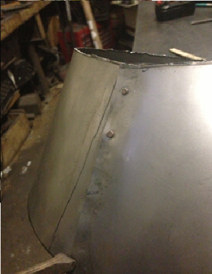Next, the frustum was created using the same procedure as the cylinder.
Drilling holes for the rivets and tabs on the bottom piece.
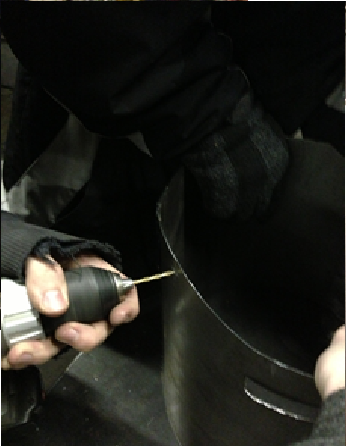The frustum was then attached to the top of the cylinder. To do this, copper rivets with small rectangular steel tabs were used. A power drill was used to drill six holes spaced symmetrically near the top edge of the cylinder.
Steel tabs after being riveted to cylinder, but before being riveted to the frustum.
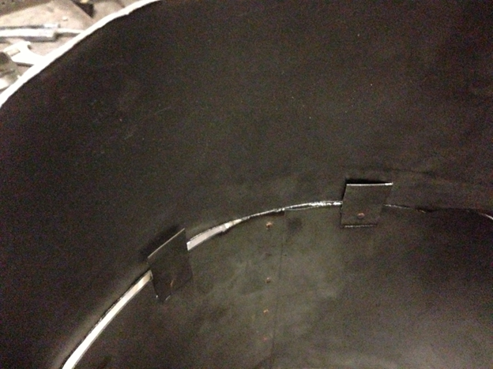For each hole, a steel tab was riveted at the bottom to the cylinder on the inside. Then, the tops of the tabs were drilled with a second hole, so that they could be riveted to the frustum. In this manner, the cylinder and frustum were fastened together.
Steel tabs fastened to the frustum, before being bent at 90 degrees. The top pieces will be placed on top to be riveted to the tabs.
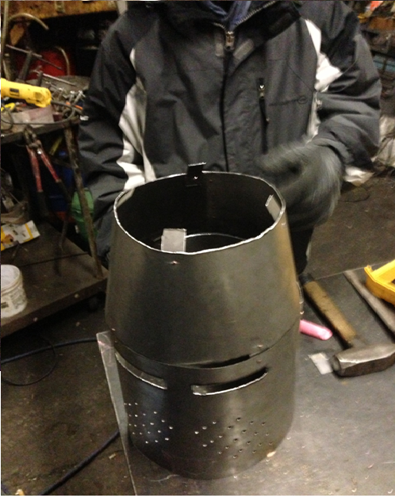The next step was to rivet the top piece to the frustum. This was done in the same fashion as the previous step, using rivets and tabs. In this case, the tabs were bent at a 90 degree angle so that they could be riveted to the flat top piece.
Top-down view of the upside-down helmet. Note the steel tabs attaching the cylinder to the frustum, and the frustum to the flat top piece.
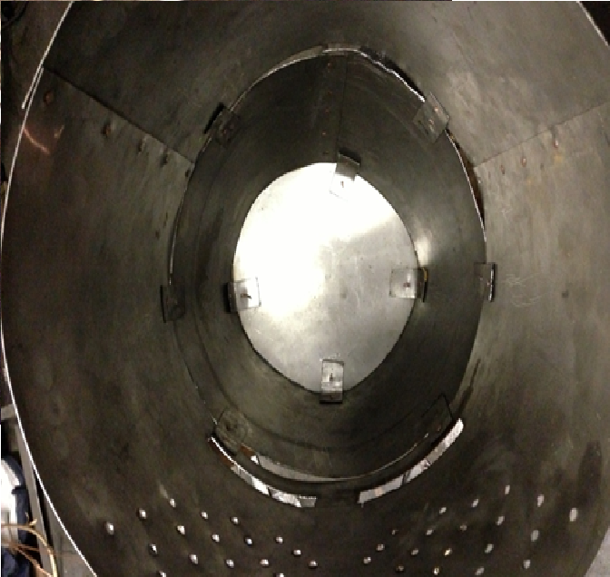To rivet the tabs to the top piece, the entire helm was placed around a piece of wood of the same height. Using the wood as a brace, the top piece was then placed and drilled through, along with the tabs. All the rivets were placed, and the helmet was turned upside down, while holding the top piece in place. The flat top of a blacksmith’s hammer was used to pound the rivets, attaching the frustum to the top piece.
Great helm with all parts fastened together.
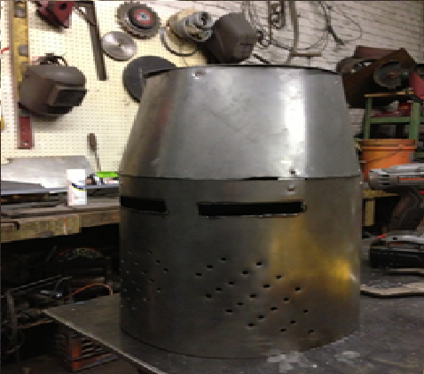After the top piece was fastened to the frustum, the helm was structurally completed.
Integrative Materials Design Center - Worcester Polytechnic Institute